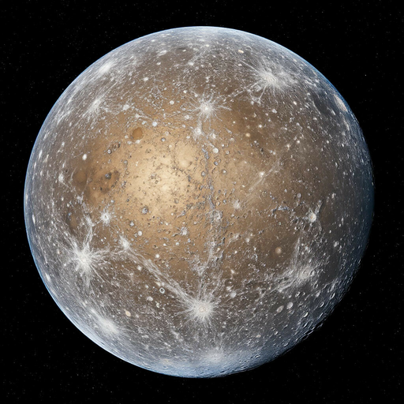
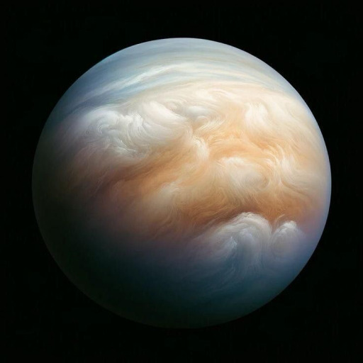
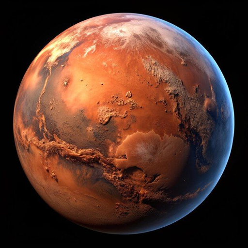
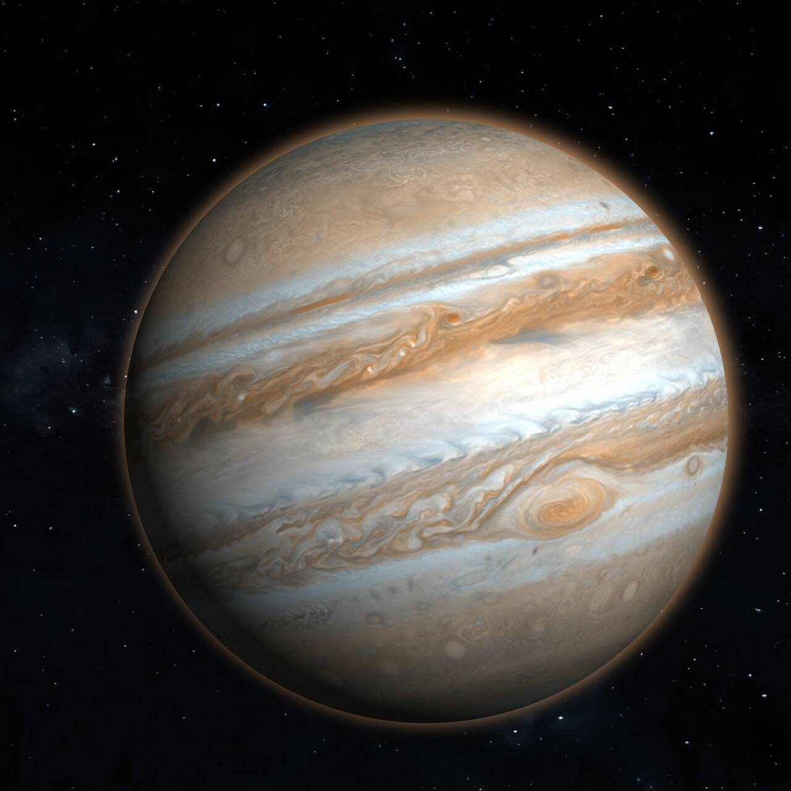
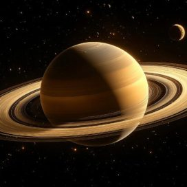
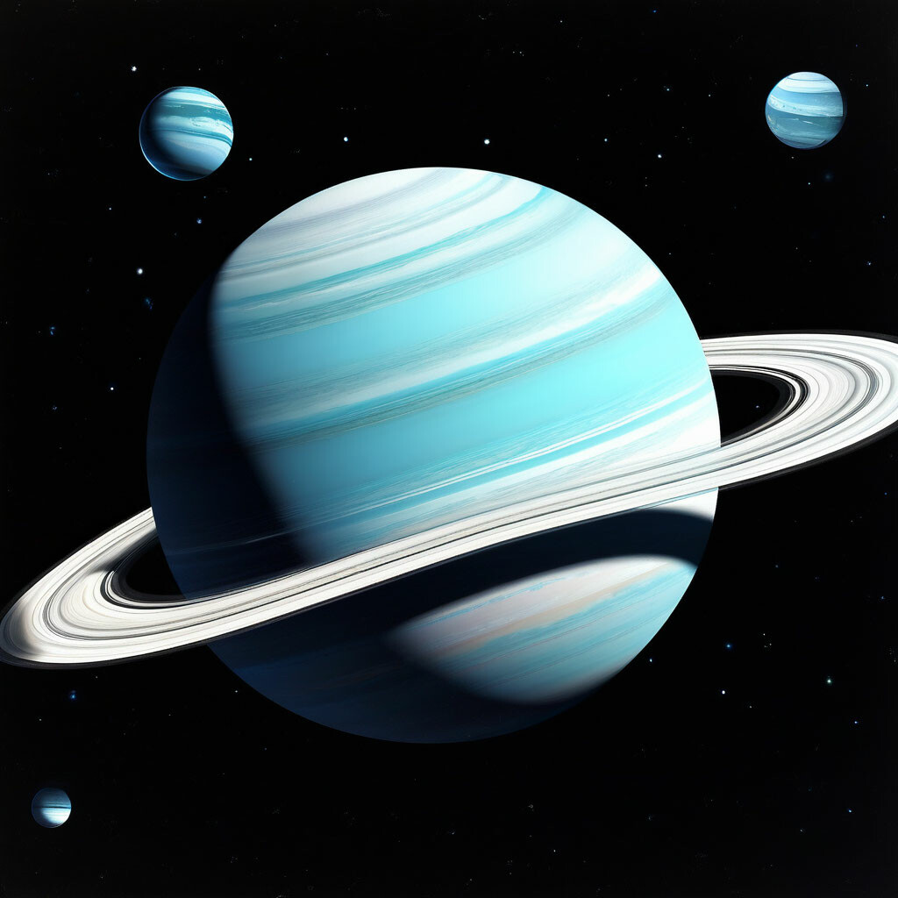
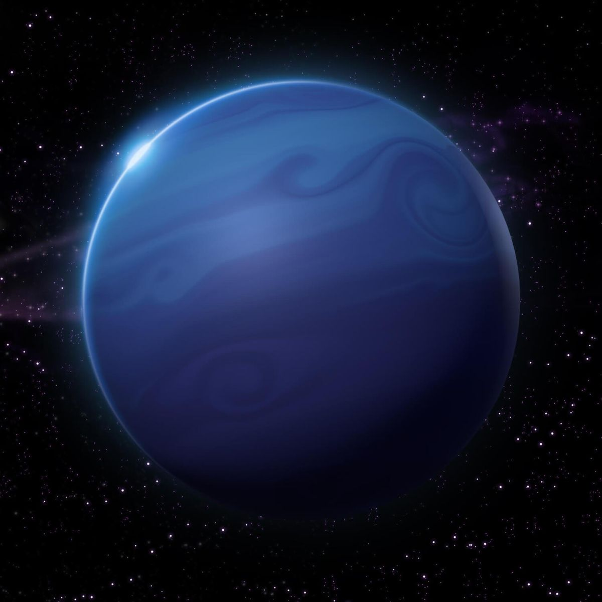

Меркурий
Меркурий - первая планета от солнца, на ней довольно жарко, но она богата относительно полезными ресурсами. Если вам нужно железо, то меркурий будет хорошим выбором для вас. Учитывайте, что планета небольшая, а еще на ней довольно жесткие перепады температур. Но железное ядро стоит того.

Вненера
Венера - уникальна, потому стоит немалых денег. Год на ней быстрее суток, а вращается она против часовой стрелки (в отличие от остальных планет). У нее очень маленький угол наклона, высокие температура и давление. Есть облака из серной кислоты, а угол наклона всего 3 градуса.

Земля
Земля - единственная населенная планета. Населена людишками, потому и стоит так дешево. Лично я рекомендую вычистить эти штуки чем-нибудь подходяжим. Но у этой планеты есть и хорошие стороны - ее атмосфара состоит из почти уникальной смеси азота, кислорода и двуокиси углерода. Я бы купил только ради этого. А еще у нее спутник есть.

Марс
Марс - красный шарик, последний из "земной группы". Возможно когда-то он был населен, хз. В общем условия на нем почти как на земле, только атмосферы нормальной нет (и людей, поэтому стоит дороже). Имеет два преславутых спутника, но они не особо интересны. Кстати красный он из-за оксида железа.

Юпитер
Юпитер - первый из газовых гигантов. Довольно пашивая штуковина, признаться честно. Тем не менее она задерживает своим гравитационным полем астероиды, что пусть и не делает его лучше, но хотябы позволяет думать что он не бесполезен. А еще у него пятно какое-то красное было.

Сатурн
Сатурн - это тот же юпитер, только поменьше, пожелтее и с кольцами. Накой они ему нужны хз, но все что пролетает вокруг него присоединяется к диску. Мне лично он тоже не очень то и нравится, но все-равно лучше чем Юпитер. Я в целом газовых гигантов не жалую.

Уран
Уран - ледяной гигант, кстати тоже с кольцами. Ледяные гигнаты мне чутка побольше нравятся чем газовые. В общем прикольная планетка, но "Uranus" читается как "Your anus", так что цену скину. А в остальном планета как планета, сказать о уране нечего.

Нептун
Нептун - вроде как последняя планета в системе, а в остальном абсолютно тот же уран, только дальше, холоднее и буз колец. Ну и он чуть более синий чем Уран. Даже про спутники рассказать нечего, ну и доставка будет простой, раз уж он на краю системы
